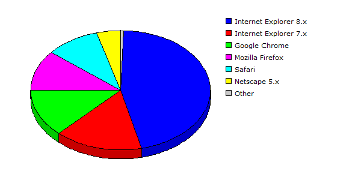

| Rank |
Browser |
Hits |
Visitors |
| 1 |
Internet Explorer 8.x |
95586 |
46.37% |
3332 |
45.60% |
| 2 |
Internet Explorer 7.x |
31341 |
15.20% |
1170 |
16.01% |
| 3 |
Google Chrome |
49483 |
24.00% |
943 |
12.91% |
| 4 |
Mozilla Firefox |
12546 |
06.09% |
802 |
10.98% |
| 5 |
Safari |
11775 |
05.71% |
705 |
09.65% |
| 6 |
Netscape 5.x |
5177 |
02.51% |
315 |
04.31% |
| 7 |
Internet Explorer 6.x |
22 |
00.01% |
11 |
00.15% |
| 8 |
Mozilla |
21 |
00.01% |
10 |
00.14% |
| 9 |
Netscape 4.x |
18 |
00.01% |
8 |
00.11% |
| 10 |
Opera |
178 |
00.09% |
6 |
00.08% |
| 11 |
Internet Explorer 5.x |
2 |
00.00% |
2 |
00.03% |
| 12 |
Wget |
3 |
00.00% |
2 |
00.03% |
| 13 |
Lynx |
3 |
00.00% |
1 |
00.01% |
| |
Total |
206155 |
7307 |
|
Description: This report contains statistics about the browsers that your visitors use.
|
|